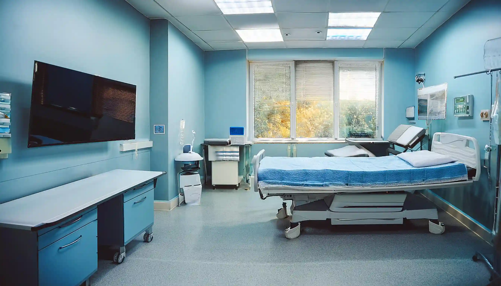

SERVICES
診療内容
当院では、地域の皆様の健康を支えるため、幅広い内科診療を行っております。日常的な体調管理から、各種の検査や治療に至るまで、どんなお悩みもお気軽にご相談ください。
一般内科診療
風邪や発熱、胸の痛み、頭痛、腹痛などの症状を中心に、一般的な体調不良の診察を行っています。
生活習慣病の診断・治療
高血圧症、糖尿病、脂質異常症など、生活習慣病の診断と治療を行います。
消化器系の診察
胃痛、胃もたれ、胸やけ、便秘、下痢などの消化器系の不調に対応しています。
呼吸器系の診察
咳、息切れ、胸の痛みなど、呼吸器系の症状について診察を行っています。
GREETING

院長挨拶
こんにちは、佐藤医院の院長、佐藤太郎と申します。
当院のホームページをご覧いただき、ありがとうございます。
佐藤医院では、「地域に根ざした医療」をモットーに、患者様一人ひとりに寄り添った診療を提供することを目指しております。
日常的な健康管理から生活習慣病の予防、さらには専門的な診断や治療まで、幅広い内科診療を行い、地域の皆様の健康を支える役割を担ってまいります。
どうぞよろしくお願いいたします。
佐藤医院
院長 佐藤 太郎
HOURS
診療時間・所在地
| 診療時間 | 月 | 火 | 水 | 木 | 金 | 土 | 日 |
|---|---|---|---|---|---|---|---|
| 9時〜12時 | ● | ● | ● | ／ | ● | ／ | ● |
| 14時〜19時 | ● | ● | ● | ／ | ● | ／ | ／ |
受付時間：9時〜11時 / 14時〜19時
休診日：木曜・土曜午後・日曜
※祝祭日は診療を行う場合がありますので事前にご確認ください。
ABOUT
当院について
佐藤医院は、地域の皆様の健康を守る、より良い生活をサポートすることを使命としています。
創立以来、私たちは「患者様一人ひとりに寄り添った医療」を大切にし、地域密着型の医療を提供してまいりました。
今後も、皆様の健康維持と疾病予防に貢献するため、より良い医療サービスを提供し続けることをお約束いたします。

STAFF
スタッフ紹介
患者様の生活環境に配慮し、最適な治療計画を。
佐藤 太郎（院長）
経歴：光翔大学医学部卒業後、耀穂中央総合病院で内科医として10年間勤務。その後、地域医療への貢献を目指し、佐藤医院を開院。
専門分野：生活習慣病管理、呼吸器疾患、内科全般
コメント：患者様にとって気軽に相談できる「かかりつけ医」を目指しています。

高橋 由美（臨床検査技師）
経歴：慶都医療技術専門学校を卒業後、瀬田中央医療センターにて15年間の臨床検査技師としての経験を積む。
専門分野：血液検査、心電図検査、超音波検査
コメント：優しく丁寧な対応を心がけています。

鈴木 真理（看護師長）
経歴：白井大学看護学部卒業後、綾が丘大学病院で10年勤務。地域医療に携わりたい思いから、佐藤内科医院に入職。
得意分野：親身な対応、注射・採血技術、健康管理指導
コメント：安心して治療を受けていただけるよう、いつも笑顔でお待ちしています。

山本 花（医療事務）
経歴：希望医療カレッジ卒業後、さくら診療所にて受付業務を担当。現在は佐藤内科医院で患者様対応を担当。
得意分野：受付業務、カルテ管理、医療費計算
コメント：初めての方もどうぞ安心してお越しください。
FAQ
よくあるご質問
初めて受診される方にも安心してご来院いただけるよう、よくあるご質問をまとめました。
はい。ご予約がなくても受診可能です。混雑状況によってはお待ちいただく場合があります。
もちろん可能です。健診結果をお持ちいただければ、必要な追加検査や生活改善についてご案内します。
はい。クリニック前に3台分の専用駐車場をご用意しています。
ACCESS
アクセス
所在地
〒123-4567
東京都台東区上野0丁目0-0
アクセス
JR上野駅より徒歩5分
駐車場
無料駐車場 10台
お問い合わせ
TEL：00-0000-0000
info@sato-clinic-test.jp